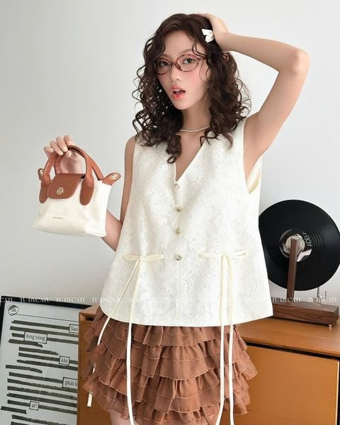

Phong cách tối giản (Minimalism) đang trở thành thước đo mới của sự xa xỉ. Trong một thế giới ồn ào và tràn ngập logo, giới tinh hoa đang chuyển hướng sang "Quiet Luxury" – sự sang trọng thầm lặng. Họ không cần chứng tỏ bản thân qua những nhãn mác phô trương.
Chìa khóa của Minimalism nằm ở chất liệu và phom dáng. Khi bạn lược bỏ đi những họa tiết cầu kỳ, chất lượng của đường kim mũi chỉ và kết cấu vải sẽ trở thành tâm điểm. Một chiếc blazer cắt may sắc sảo hay một chiếc quần âu cạp cao vừa vặn có thể nâng tầm diện mạo của bạn lên mức tối đa.

Sự quyền lực của phụ kiện
Với trang phục tối giản, phụ kiện đóng vai trò quyết định. Một chiếc túi xách da thật với phom dáng cứng cáp, hay một chiếc đồng hồ dây kim loại cổ điển sẽ làm bừng sáng cả set đồ. Hãy nhớ nguyên tắc: "Chỉ giữ lại những gì thực sự cần thiết và để chúng tự tỏa sáng".
"Sự thanh lịch thực sự luôn từ chối sự chú ý ồn ào, nhưng lại lưu luyến mãi trong tâm trí người nhìn."